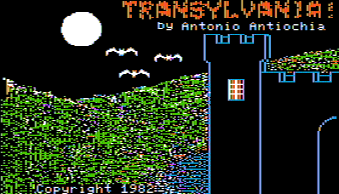

このサイトについて
AppleWin エミュレータ上のゲーム画面をローカル LLM に読ませ、次の行動を考えさせて入力する、という手順を 1 ターンずつ繰り返してプレイしています。ここにある地図と絵本は、そのプレイ記録から自動生成したものです。
各ゲームには 2 つの記録があります。冒険地図は、訪れた場所を実際の画面とともに方角どおりに並べたもので、カードをクリックするとその場所で見つけた物や実行した行動が見られます。冒険絵本は、旅路を場面ごとに絵と日本語の物語で読めるようにしたものです。